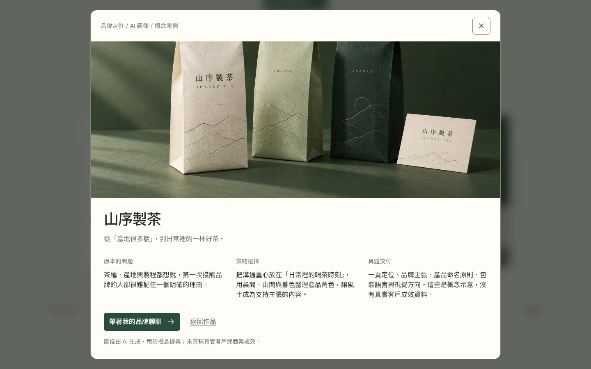
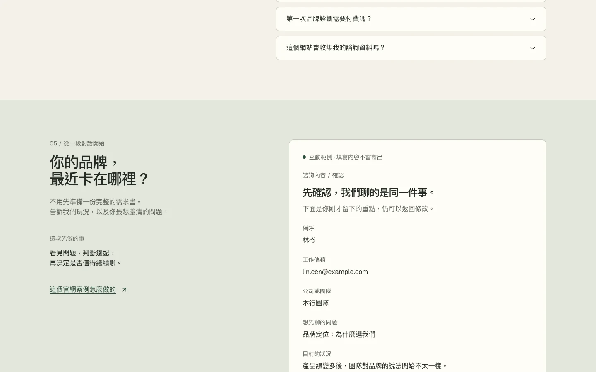
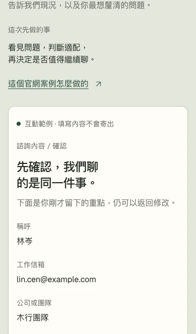

訪客需要的，
是判斷的依據
假設讀者是成長中團隊的創辦人或品牌負責人：公司做的事變多了，每個人卻用不同方式介紹品牌。他們需要先判斷，問題是定位、訊息還是視覺，以及顧問會交付什麼。
使用者確認了「企業官網結合 landing page」與「品牌策略顧問公司」；受眾、服務內容、語氣與作品題材由代理提出。這是一個沒有既有介面或品牌來源的新案例，因此從主題起手。
結構 A 是「先給判斷依據，再提出邀請」。原先的處理 1「紙感與目的」以暖白、深綠與作品照片建立質感；茶包裝、品牌手冊與名片圖由 AI 生成，呈現紙張與印刷的實體感。新版保留這批概念作品，另以處理 2 重做首屏的視覺敘事。

讓視覺，
演出顧問的工作
作品換成有材質的圖像後，使用者說「有質感多了」，接著帶來 Elaya 的展示影片。參考帶來的啟發是：讓一個視覺隱喻同時組織圖片、文案與構圖。這輪沒有複製影片的素材、程式或完整網站流程。
處理 2 把品牌工作想成一張紙面工作檯：起初四份紙面與照片散落，訪客往下捲時，逐步整理成「對誰說、為何選你、一致表達」的方向板。捲動停止，動作也停；反向捲動則沿原路返回。
代價是服務前多了一段敘事。訪客可以用「直接看服務」跳過，也能立即進入詢問。減少動態、短螢幕或不支援捲動時間軸時，改成正常文件流中的可讀靜態內容。
新版有趣很多，保留加入範例。
這句回覆支持採用新版視覺並加入本案例；沒有提供詢問任務的操作紀錄，也沒有單獨驗收結構 A。


企業官網，
也能只推進一件事
網站仍要讓人了解公司、作品與服務，但這些內容共同服務一個動作：「預約品牌診斷」。訪客不必先理解顧問的所有術語，只要能說清楚自己的情境，知道下一步會發生什麼。
這裡的預約是詢問流程示例，沒有日曆或真實時段。訪客先選需求、填寫背景，再檢查一份摘要；頁面要明白告知沒有寄出資料。
採用長篇敘事，是因為專業服務需要解釋思考方式與交付範圍。主張之後先看作品，再看服務、方法與合作條件，最後進入詢問。這個順序仍需要實際試用檢查。
每個段落回答一個疑問
- 首屏：這家公司能幫我處理什麼？
- 概念案例：它如何理解問題、形成方向？
- 服務與方法：我會拿到什麼，需要投入什麼？
- 合作條件與問答：我的團隊適不適合？
- 詢問：我現在要準備哪些資訊？
這條路徑把企業介紹接到訪客的決定上。概念作品用來展示提案方式，不能代替真實客戶的成果證據。

內容先有次序，
視覺才有著力點
本輪選 landing-page-design 作為主要工藝技能：使用者希望把企業官網做成 landing page，這個能力提供從論述、章節到視覺規則的一套方法。design-experience 繼續管理任務、假設、原型與驗證紀錄。
新版用 redesign-existing-projects 協助定位視覺問題，再用 animate 處理與閱讀有關的紙面捲動敘事；landing-page-design 仍是主要方向。沒有啟用 design-to-motion 或製作功能循環展示，也沒有影片匯出。動作用原生 CSS 捲動時間軸與既有緩動，不增加函式庫。
| 層次 | 本輪處理 | 責任與邊界 |
|---|---|---|
| 使用者任務 | 了解服務 → 評估案例與適配 → 準備詢問 | design-experience；真人任務試用尚未完成 |
| 內容與視覺 | 長篇敘事、交付物導向服務、清楚的主要動作 | landing-page-design；套在序間原型 |
| 案例文章 | 解釋選擇、連結原型、揭露證據範圍 | 沿用既有網站版型與共用樣式 |
技能來源：Elaya / ai-design-skills；流程入口：carl-skills / design-experience。新版未修改既有原型或共用網站樣式，沒有新增依賴。
作品說明思路，
服務說明交付
概念案例用「問題、處理方式、交付物」說明策略工作。訪客可以檢查一項模糊的品牌問題如何被拆解，以及方向最後落在哪些可使用的材料上。
三項服務分別對應定位簡報、訊息架構與視覺方向。這些名稱的作用是讓人理解工作範圍；原型中的具體方案屬於虛構情境，不是真實報價或商業承諾。
合作適配也要寫出條件：團隊需要有決策負責人，並願意投入討論。先釐清問題再決定範圍，避免讓每位訪客都以為自己需要完整換牌。


帶著一個問題，
走到詢問摘要
這輪的試用問題是：訪客能否判斷服務是否適合自己，並在保留情境的情況下完成詢問？下面是操作任務，沒有宣稱真人已完成。
- 開啟概念案例，找出問題、做法與交付物。
- 選擇一項相關服務，進入「預約品牌診斷」。
- 先留空必填欄位，查看錯誤與焦點提示。
- 補齊資料，檢查摘要，再返回修改。
- 完成示例後，按「再看剛才的內容」，再返回修改，確認原先的需求與背景仍在。
表單恢復的設計目標是錯在哪裡就說在哪裡，保留已輸入內容，並把焦點移到第一個需要修正的欄位。Chrome 的程式化操作已檢查這些恢復路徑，範圍如下表。




完成示例顯示「示例已完成，沒有寄出資料」。原型只在瀏覽器內處理資料，沒有後端、日曆、付款或真實聯絡服務；重新整理頁面會重設示例。
驗證到哪裡
新版在 Chrome 的 75 項功能斷言與 69 項動態、降級及比較斷言全部通過，結果已寫入驗證紀錄。這些結果不代表真人已完成詢問任務。
| 檢查 | 觀察範圍 | 目前結果 |
|---|---|---|
| 服務評估與詢問 | 75 項功能斷言，涵蓋概念案例、服務預填、驗證、摘要、修改、完成與資料保留 | 全部通過；包含選單／對話框／問答鍵盤、本機檔案、無腳本保護與本機資料處理，沒有表單網路傳輸。 |
| 版面與捲動敘事 | 69 項追加斷言涵蓋 1440 × 900、1440 × 640、820 × 664、390 × 664、360 × 640；另檢查 390 × 568 靜態模式 | 全部通過；正常捲動的起點／中段／終點、反向捲動、焦點轉移、短螢幕分隔與比較入口均有檢查。 |
| 減少動態與降級 | 正常模式、reduced motion、no-JS，以及不支援捲動時間軸的功能偵測失敗模擬 | 內容可讀，無腳本表單保護保留；unsupported 為模擬，不能當成 Safari 或 Firefox 實測。 |
| 靜態與獨立複查 | 新版／比較頁的路徑、錨點、ID、圖片 metadata；捲動切換焦點與概念標示遮擋 | 靜態檢查通過；獨立複查發現的兩項問題已修正並由同一審查者確認關閉。案例文章與更新後圖檔另作整合檢查。 |
| 人類回饋 | 視覺處理選擇、結構接受與真人操作分開記錄 | 使用者選擇處理 2 並授權加入範例；結構 A 未單獨驗收，沒有真人任務完成證據。 |
| 尚未檢查 | Safari／Firefox、實體手機、螢幕報讀、200% 文字縮放、真人任務試用 | 尚未執行；沒有真實服務或轉換效果的驗證。 |
概念能說明的，
仍有邊界
這個例子呈現一種企業官網的資訊安排與詢問流程。兩組作品圖像由 AI 生成。沒有真實客戶、團隊履歷、品牌研究、營收成果或客戶見證；概念案例不能用來推論公司的實績。
原型中的免費初談與服務條件都是情境文案，沒有提供真實商業服務。表單完成代表本機示例走完，沒有建立預約或寄出資料。
使用者已選擇處理 2「從混亂到清楚」，並要求保留加入範例。這項視覺選擇沒有取代結構 A 的驗收或真人任務試用；也不代表企業需求與轉換效果已獲驗證。使用者先選擇新版加入範例，本輪再授權收尾發布。